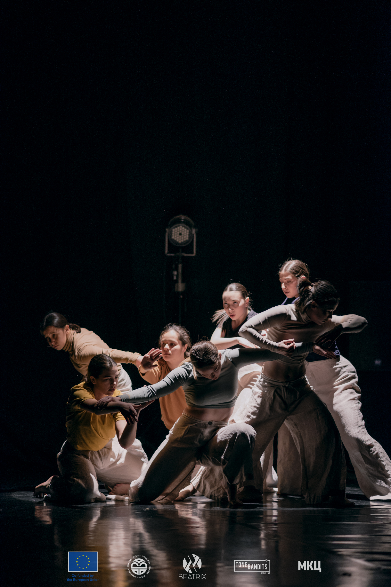
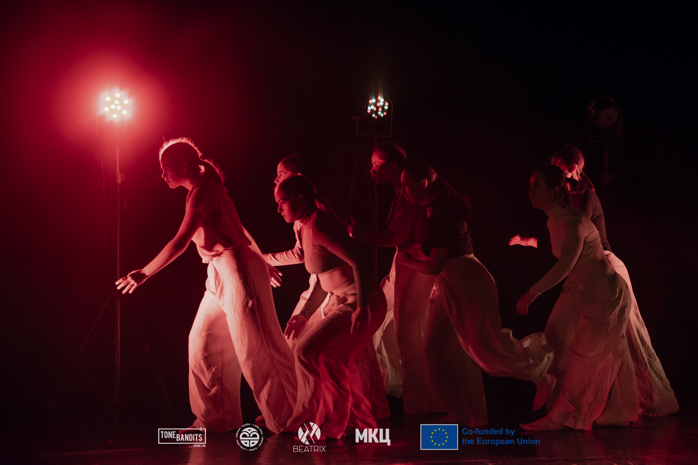
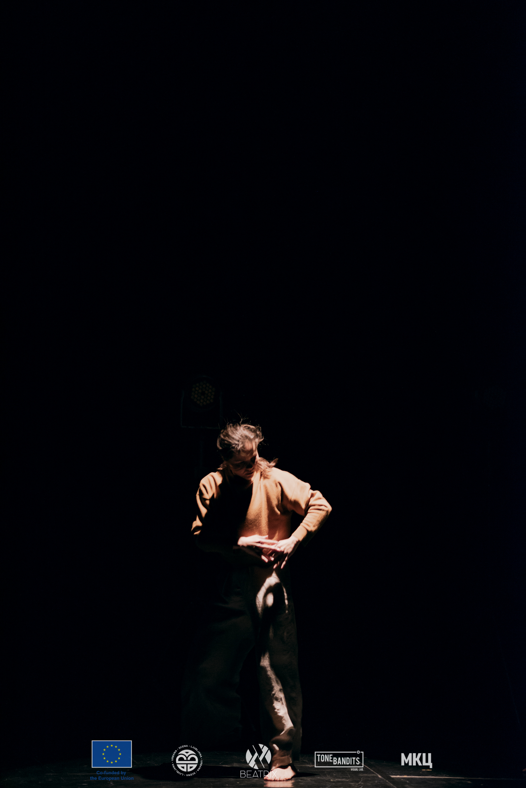
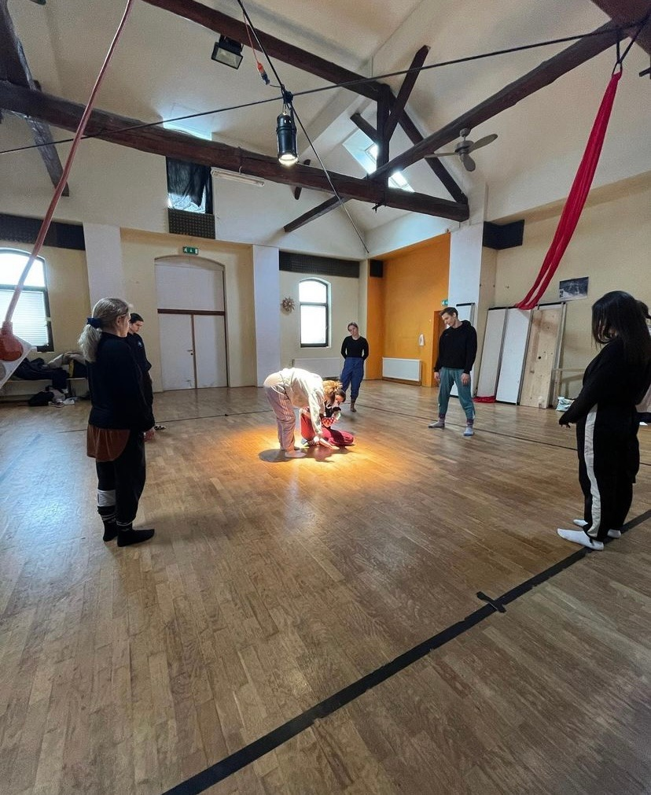

InDivisible
Кореограф: Александар Теш - Австрија
InDivisible е перформанс создаден од мотивот на споредба на личноста
како посебна индивидуа и личноста како
дел од група.
Процесот на создавање на перформансот траеше 10 дена, во кои Алекс
работеше на
нови техники и концепти секојдневно од 3 до 5 часа со
танчерите
кои учествуваа.
МКЦ, Скопје



Urbana Scena
Вториот дел од овој проект се базираше на патување во Љубљана,
каде инструкторите од Битрикс Културно-Уметничкиот Центар
имавме прилика да
посетиме повеќе студија и да присуствуваме
на работилници по Freestyle оддржани од танчери од Словенија.
Љубљана, Словенија
